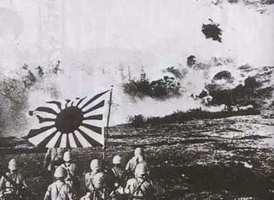
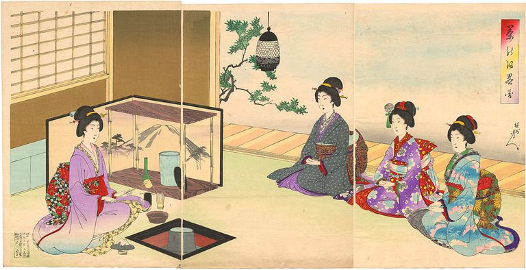
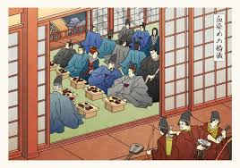

Istoria Japoniei (◡‿◡✿)
✿ Impactul pe care Japonia l-a avut asupra lumii moderne este enorm.
✿ Istoria acestui stat este bogată şi e interesant de urmărit cum Japonia s-a ridicat la un asemenea rang de mare putere.
✿ Este singura naţiune care a suportat vreodată un atac nuclear.
✿ Sosirea Japoniei în arena mondială a fost spectaculoasă. De la un tărâm îndepărtat, obscur şi exotic de acum 150 de ani, ea a devenit rapid un rival de primă mână pentru puterile imperialiste, o ameninţare militară pentru ordinea mondială, şi apoi, o supraputere economică.

✿ În spatele acestui expansionism se află un set de ideologii, utile pentru a justifica această dezvoltare a Japoniei. Printre cele mai răspândite ideologii se aflau conceptul de împărat absolut şi divin şi ideea unei Japonii care ocupă şi controlează Asia pentru a o elibera-o idee specific japoneză de imperialism antiiperialist.
✿ Dezvoltarea economică a Japoniei reprezintă un alt aspect al modernităţii naţiunii care i-a impresionat pe vestici. Japonia se putea lăuda deja cu o sumă de factori cheie ai producţiei la începutul perioade de bum economic, deţinând forţă de muncă pe care o exploata la maximum. Astfel că Japonia deţinea forţă de muncă în număr considerabil, forţă de muncă şcolită, forţă de muncă ascultătoare, capital acumulat în sectorul privat, firme cu o oarecare experienţă, o cantitate acceptabilă de surse energetice de bază. Ceea ce îi lipsea era tehnologia şi întreprinzătorii.
✿ Deficitul de tehnologie, incluzând atât echipament cât şi expertiza, a fost repede compensat. Aceasta s-a făcut în mare parte prin importarea de echipament străin, angajarea de numeroşi consilieri tehnici occidentali şi trimiterea japonezilor la studii în străinătate. Japonia pierduse trenul Revoluţiei Industriale, dar pe de altă parte profitase de pe urma faptului că se dezvoltase tarziu. Putuse în acest fel utiliza tehnologie de ultimă oră la care alte naţiuni ajunseseră numai după un secol sau chiar mai mult de încercări şi eşecuri costisitoare.

✿ Japonia este un stat-naţiune cu un sentiment adânc inrădăcinat al caracterului său unic şi al statutului său special. Istoria sa insulară, chiar şi mitologia sa imperială a predispus poporul japonez, foarte muncitor şi disciplinat, să se considere înzestrat cu un mod de viaţă distinct şi superior, pe care la început Japonia l-a apărat printr-o splendidă izolare şi apoi, când în secolul al XIX-lea lumea imitând imperiile europene, prin strădania de a-şi crea unul propriu în Asia continentală.
✿ În opinia lui Brzezinski, Japonia este o ţară, în acelaşi timp bogată, dinamică şi puternică, dar şi izolată pe plan regional şi limitată sub aspect politic prin dependenţa securităţii sale de un aliat puternic care întâmplător este principalul rival economic al Japoniei.
✿ Japonia a profitat de ce iniţial părea un dezavantaj pentru ea şi a reuşit să îşi dezvolte capacităţile economice şi tehnologice, şi nu numai, pentru a se impune ca o mare putere.
✿ La ora actuală, Japonia este o naţiune în continuă ascensiune, un stat de care marile puteri ţin seama, şi, de asemenea, un stat care are un cuvânt de spus pe plan regional, cât şi international.